Free · No account · No ads
Everyday tools.
Kept on your device.
HeyTools is 44 small, fast tools in one place: play your videos and music, record, take notes, set alarms, convert files, calculate and more. They run on your phone or in your browser, and your data stays with you.
Some tools (streaming, weather, speed test, downloads) use the internet when you use them. See exactly what is sent.
What HeyTools solves
Most phones are full of single-purpose apps that ask for an account, show ads, or upload what you give them. HeyTools replaces that pile with one app that does the job and stays out of your way.
Too many apps
Video and music players, a recorder, notes, timers, alarms, converters and calculators in one install, with one consistent design.
Privacy you can check
No sign-up and no ad networks. Files you pick are processed on your device. Private data in the app is encrypted, and the privacy page lists every online service a tool can contact.
Works without signal
36 tools work fully offline, and most others work offline for the parts that do not need the internet.
Fast and light
Each tool is a small page that opens instantly. No bloated suite to wait for, and no account to create first.
All 44 tools
Tap a tool to open it. The label shows whether it works offline. Read what each one can do →
Video Player
Plays every video on your phone, live TV and streaming links.
Partly onlineMusic Player
3D player for all the music on your phone, plus streaming.
Partly online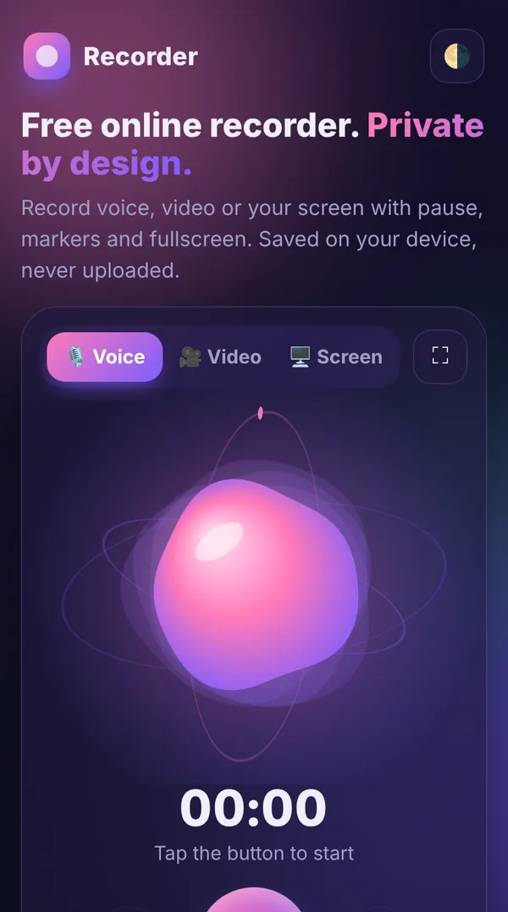
Recorder
Record voice, video or your screen. Saved on your device.
Works offline
Geo Camera
Photos stamped with place, time, weather and a map.
Partly online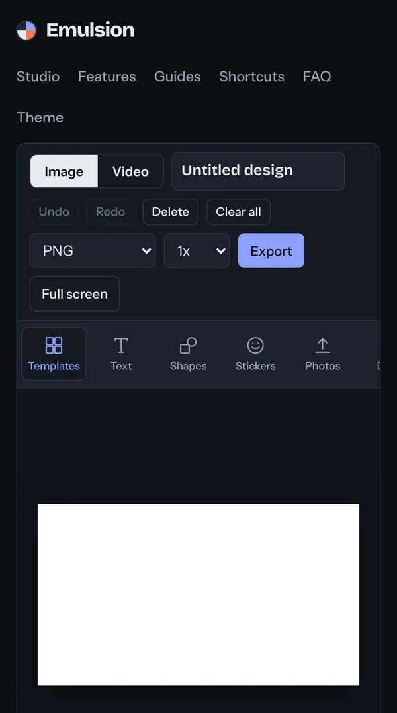
Emulsion
Image and video editor with layers and a timeline.
Works offline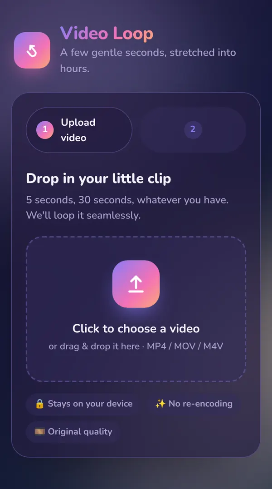
Video Loop
Turn short clips into seamless long loops.
Works offline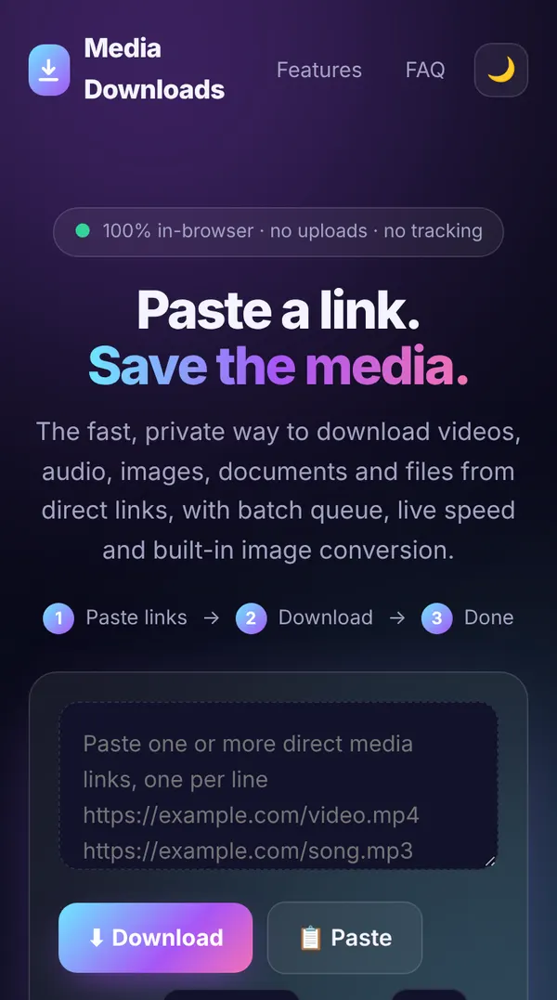
Media Downloads
Download public media from a link.
Needs internet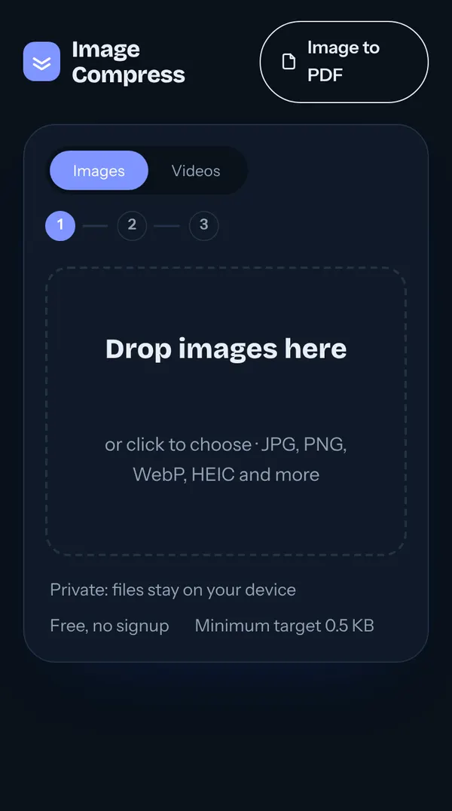
Image Compressor
Shrink images to a size you choose.
Works offline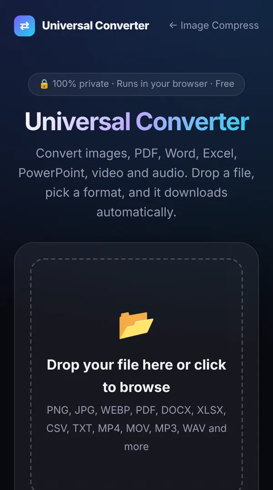
Image to PDF
Combine images into one PDF.
Partly online
Background Removal
Remove photo backgrounds without uploading.
Partly online
Barcode & QR Maker
Make barcodes and QR codes as PNG or SVG.
Works offline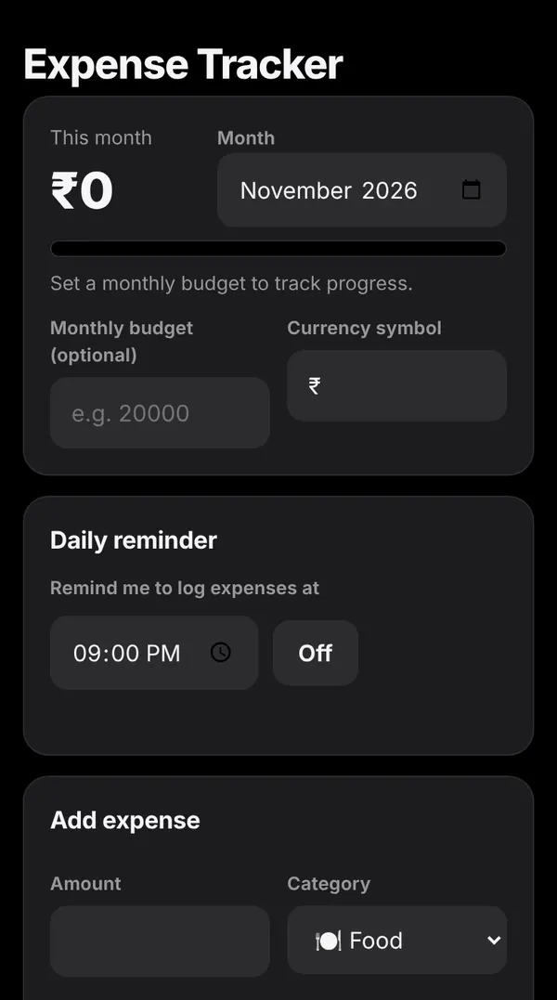
Expense Tracker
Log spending, see it by category, track a monthly budget.
Works offlineHabit Tracker
One-tap daily check-ins with streaks.
Works offline
Focus Timer
Pomodoro work and break sessions with a chime.
Works offline
Alarm Clock
14 alarm tones, repeat days and snooze. Rings even when the app is closed.
Works offline
Notes & To Do
Pinned notes and daily tasks with reminders.
Works offline
World Clock & Stopwatch
Times in 400+ zones and a lap stopwatch.
Works offline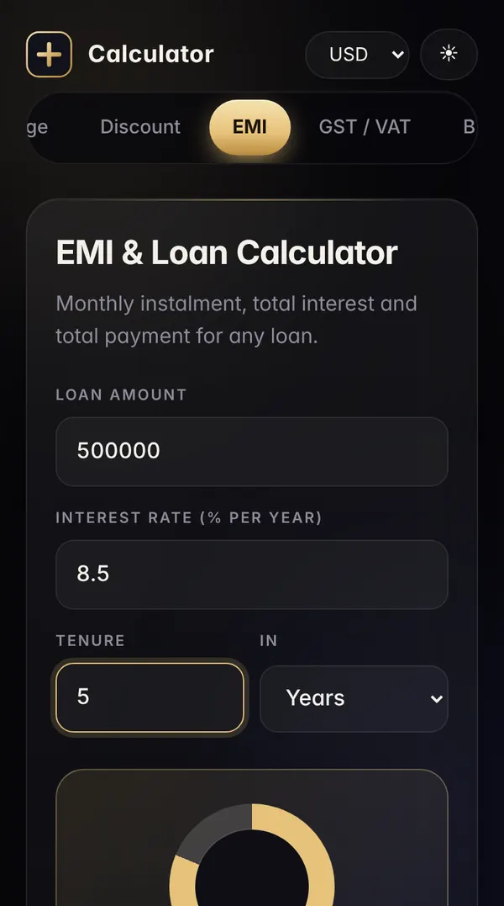
Calculator Suite
EMI, GST, tip, fuel, BMI, age and more.
Works offline
Scientific Calculator
Trigonometry, logs and complex numbers.
Works offline
Unit Converter
Length, weight, temperature, volume, data and more.
Works offline
Word Counter
Words, characters, reading time as you type.
Works offline
Password Generator
Strong passwords, passphrases and PINs.
Works offline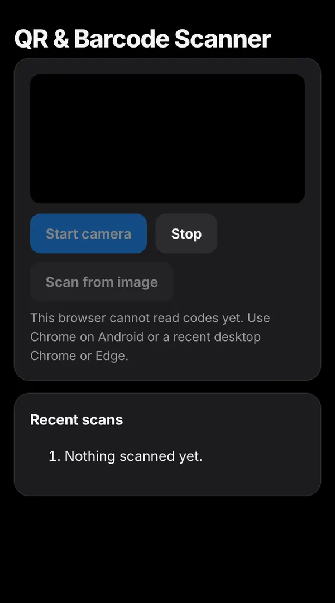
QR & Barcode Scanner
Scan codes with your camera. Nothing is uploaded.
Works offline
Compass
Heading, cardinal points and bearing to a place.
Works offline
Spirit Level
Bubble level and angle meter.
Works offline
Internet Speed
Download, upload, ping and jitter.
Needs internet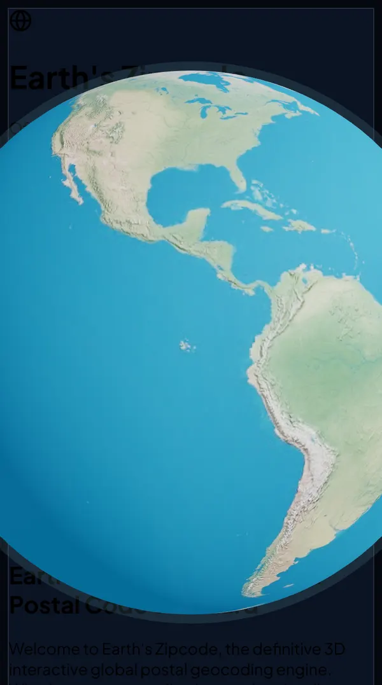
Earth's Zipcode
3D postal and PIN code finder.
Needs internet
JSON Formatter
Format, validate and minify JSON.
Works offline
Color Picker
HEX, RGB, HSL, palettes and contrast.
Works offline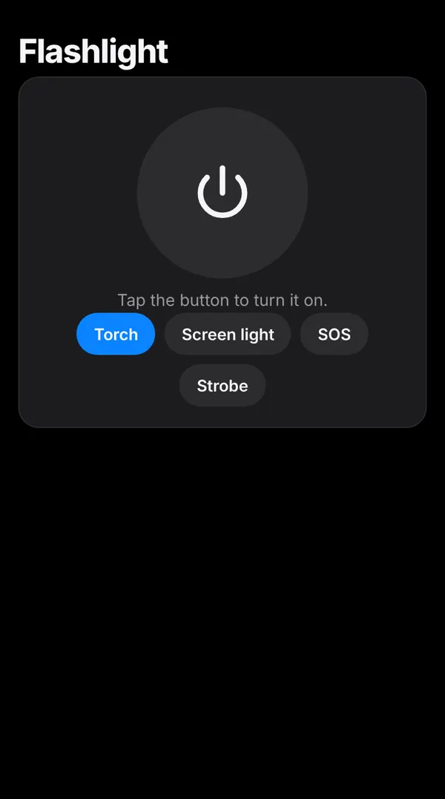
Flashlight
Camera torch, screen light, SOS and strobe.
Works offline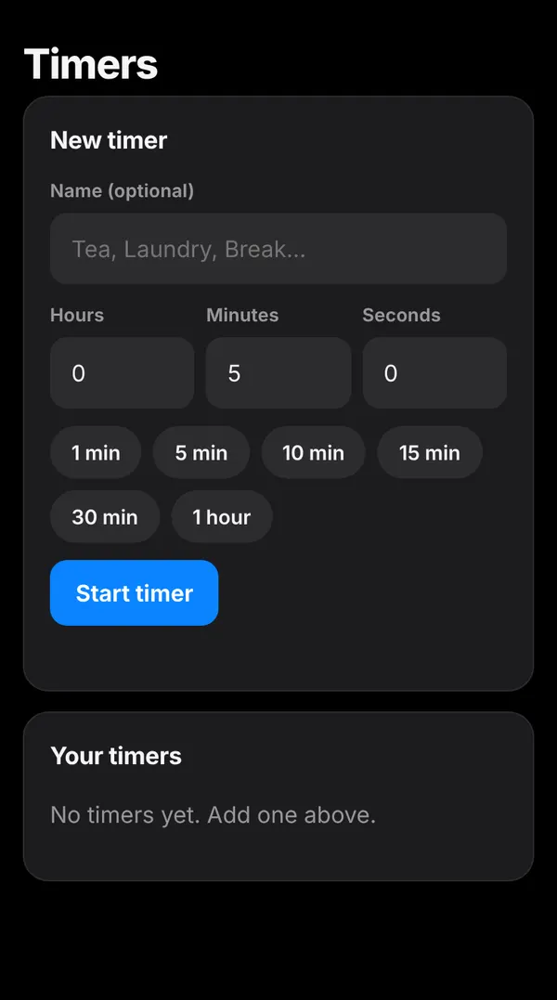
Timers
Several countdown timers with alerts.
Works offlineWater Tracker
Log water, reach your goal, get reminders.
Works offline
Sleep Calculator
Best bedtime and wake-up time by sleep cycles.
Works offline
Breathe
Guided box, 4-7-8 and calm breathing.
Works offline
Tally Counter
Big tap counter with targets like 33, 99, 108.
Works offline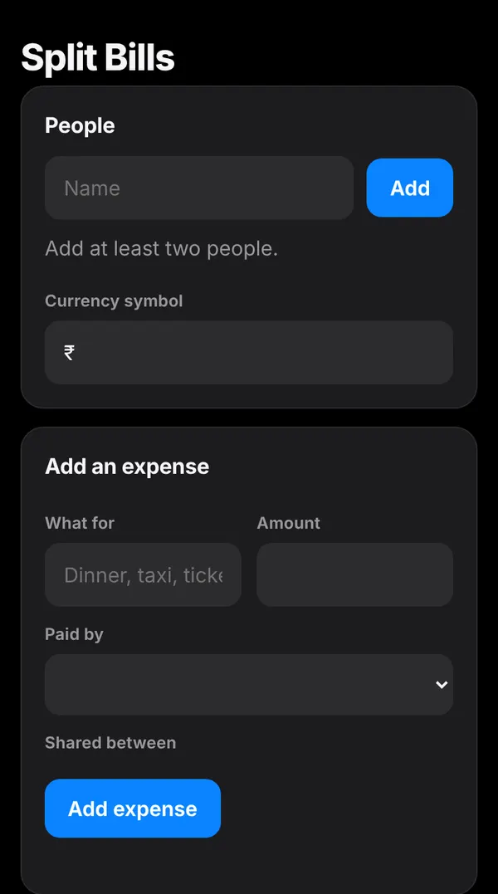
Split Bills
Share group expenses and see who pays whom.
Works offline
Date Calculator
Days between dates, add time, exact age.
Works offline
Encode & Hash
Base64, URL encoding, SHA hashes, UUIDs.
Works offline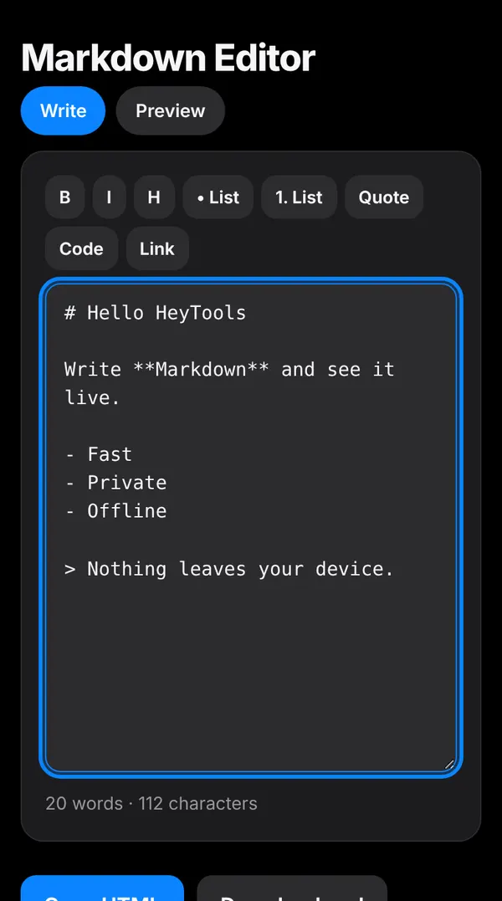
Markdown Editor
Write Markdown with live preview.
Works offline
Image Resizer
Resize, rotate, flip and convert images.
Works offline
Spin Wheel
A fair wheel to pick a winner.
Works offline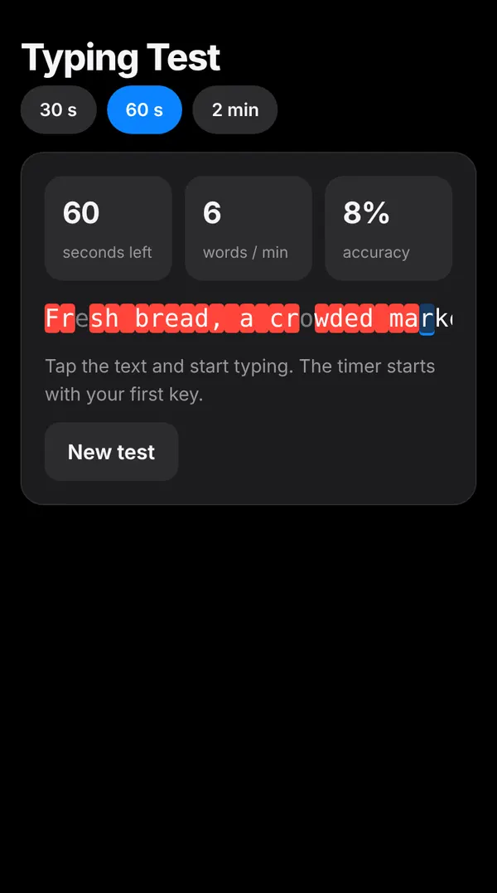
Typing Test
Check your typing speed and accuracy.
Works offline
Cyber Rush
3D cyberpunk endless runner.
Works offline
Dice Roller
Realistic 3D dice with five game modes.
Works offlineNo tool matches that search.
Also from the maker: OpsReveal, Retail loss prevention audits. Opens its own site. It has its own privacy policy.
Highlights
A few things people use HeyTools for most.
Video Player
Import videos or folders, resume where you stopped, watch live TV from 100+ countries, search streaming sites, with a queue, picture-in-picture and subtitles.
Music Player
A 3D vinyl player for your own audio files, plus Spotify, YouTube, SoundCloud, Apple Music and Deezer links.
Anti-Theft Guard (Android app)
Locks the screen and sounds a loud alarm if your phone is snatched or unplugged. Android app only. Not available on the website.
Geo Camera
Photos stamped with place, date, time, weather and coordinates.
Recorder
Voice, video and screen recording with pause and markers. Recordings stay on your device, encrypted in the app.
Notes, trackers and money
Notes, to-dos, habits, water, expenses and bill splitting, with reminders, all private.
Privacy, with clear boundaries
No account and no advertising is the promise. These three lines say where the honest edges are.
Never leaves your device
Notes, trackers, expenses, recordings, photos, passwords and settings. Files you pick are processed locally. Private data in the app is encrypted with a password you choose, or with a device-only key if you prefer no password.
Sent only when you use an online feature
Music and video streaming, live TV, weather and place lookups, the internet speed test and media downloads contact the services that provide them, and those services receive the request they need to answer.
Optional analytics
Anonymous download counts are off until you turn them on. When on, they send an event name, device type and a random number, never your files or notes.
Read the full privacy page → · Security checks are safeguards, not a certification: what they cover and what they don’t.
Get HeyTools
One app with every tool. It finds the videos and music on your phone, keeps playback going with the screen off, and sends alarm and reminder notifications.
Android phone or tablet
Free download. Your phone may ask once to allow installs from your browser, and Google Play Protect may offer to scan the app: tap Scan or Install anyway.
iPhone and iPad
Open the web app, tap Share, then Add to Home Screen. Many tools run offline. App-only tools such as Anti-Theft Guard are Android only.
Windows, Mac and Chromebook
Open the web app and use your browser’s install button to add it to your computer.
Questions
Is HeyTools really free? Do I need an account?
Yes, it is free, and there is no account, no sign-up and no advertising. You can open any tool straight away.
Where is my data stored?
On your device. Notes, trackers, expenses, recordings and photos are never sent to a HeyTools server, because there is no such server. In the Android app, private tool data is encrypted on the device.
Which tools use the internet?
Mainly Music Player and Video Player (streaming, live TV, search), Geo Camera (weather, address, map), Earth’s Zipcode, Internet Speed and Media Downloads. Everything else works offline. The privacy page lists every service and what it receives.
Can I lock my private data with a password or my fingerprint?
In the Android app you choose: a password (with optional fingerprint or face unlock, which needs the password to turn on), or no password, where the data is still encrypted with a key kept on the device and opens automatically.
What happens if I forget my password?
It cannot be recovered, by design: nobody, including us, can open the encrypted data. You can erase it and start fresh, or restore an encrypted backup with that backup’s own password.
Is HeyTools security-certified?
No. It uses safeguards such as a Content Security Policy, blocked cleartext traffic, disabled Android backup, Android Keystore encryption, encrypted backups, dependency audits and source checks, all verified automatically. That is not a certification or an independent audit, and SECURITY.md lists the limits.
What is Anti-Theft Guard?
An Android-app-only tool. It watches for the charger being unplugged or the phone being snatched, locks the screen and sounds a loud alarm until you unlock. It cannot stop a hardware force-restart.
Does it work offline?
Yes, most of the 44 tools do. Each tool shows whether it works offline, partly online or needs internet.
How do I install it?
On Android, download the APK from the Get the app section. On iPhone, iPad and computers, open the web app and use Add to Home Screen or your browser’s install button.